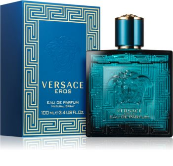

| Note de varf | MENTA, MAR VERDE, COAJA DE LAMAIE |
| Note de inima | VANILIE, AMBROXAN, GERANIUM, TONKA |
| Note de baza | MUSCHI DE STEJAR, LEMN DE CEDRU, VETIVER |
| Grupe de parfumuri | ORIENTALE, LEMNOASE |
Apa de parfum pentru bărbați Versace Eros a fost lansată în anul 2012. „Am creat această aromă Eros pentru bărbatul care este atât curajos cât și pasional, asemenea unui zeu grec.” – a spus Donatella Versace.
